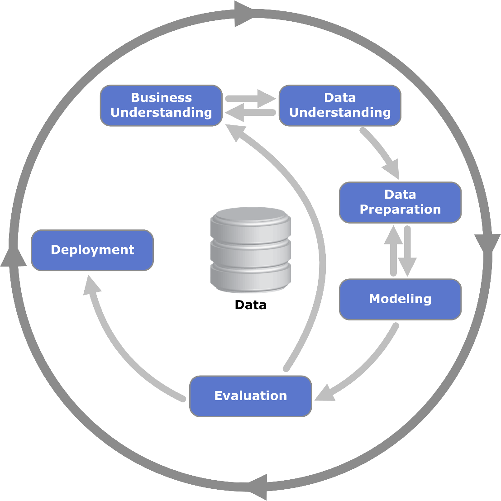

1. Definition¶
The CRoss-Industry Standard Process for Data Mining (CRISP-DM), created in the end of 1996 by leaders of Daimler-Benz, is a non-proprietary, documented and freely available data mining methodology and process model.
This model encourages best practices and offers organizations the structure needed to realize better, faster results from data mining due the complete blueprint for conducting a data mining project.
After many changes on CRISP-DM, a significant progress occurs on 2000 due a development of a standardized data processing model accepted by industry players.
CRISP-DM provides a generic process model capable of being modified for the particular needs of any industry.
The data mining methodology and techniques combined with assistance from more experienced practitioners can be an essential tool to understand the concepts and steps involved in the entire data mining process.
CRISP-DM organizes the data mining process into six phases: business understanding, data understanding, data preparation, modeling, evaluation, and deployment.
The arrows indicates the dependencies between the phases and the outer circle symbolizes the cyclical nature of data mining itself.
After complete the cyciclal the lessons learned can be analysed and show to business team. After it can be more focus on business questions and start again focusing on get other analysis.
 |
|---|
Phases of the CRISP-DM |